액터가 World에 등록되는 과정
InitWorld이후에 호출되는 함수인 UpdateWorldComponents 함수는
월드에 있는 모든 레벨에대해서 액터들을 전부 등록하는 함수이다.
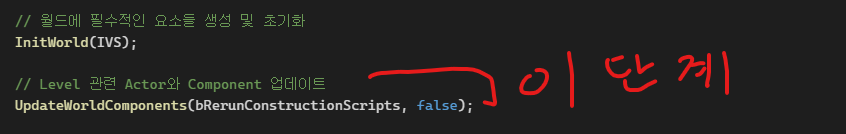
액터는 아래처럼 월드에 보이는 모든것이다. (안보일수도 있긴하지만,)
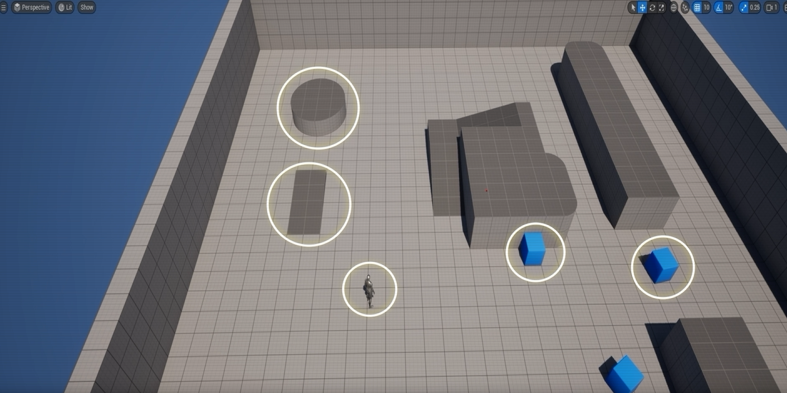
얘네들은 언제 어떻게 등록되는 것일까??
3줄요약
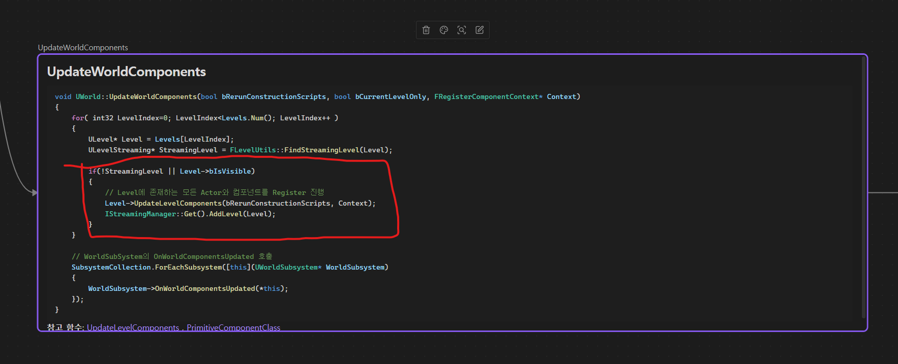
액터의 등록 : 액터가 가진 컴포넌트를 월드에 등록하는 과정
월드에 있는 액터들은 월드가 생성될때 등록된다.
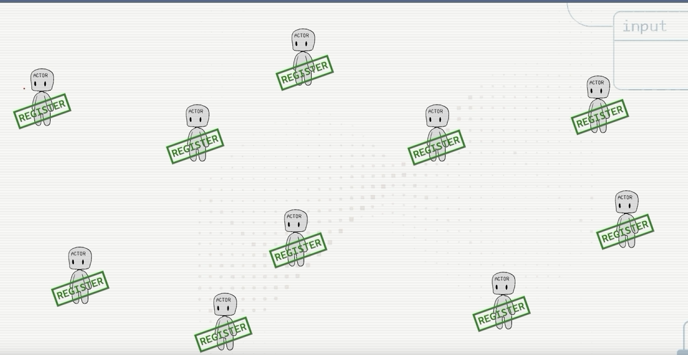
그냥 이렇게 죄다 한번에 등록하는건 아니고,,
등록하는 몇가지 방법이 있다.
-
나눠서 등록 한 프레임에 모든 액터들을 전부 등록하지 않고, 프레임별로 나눠서 등록한다.
큰 Hitching을 줄이기 위함이다.
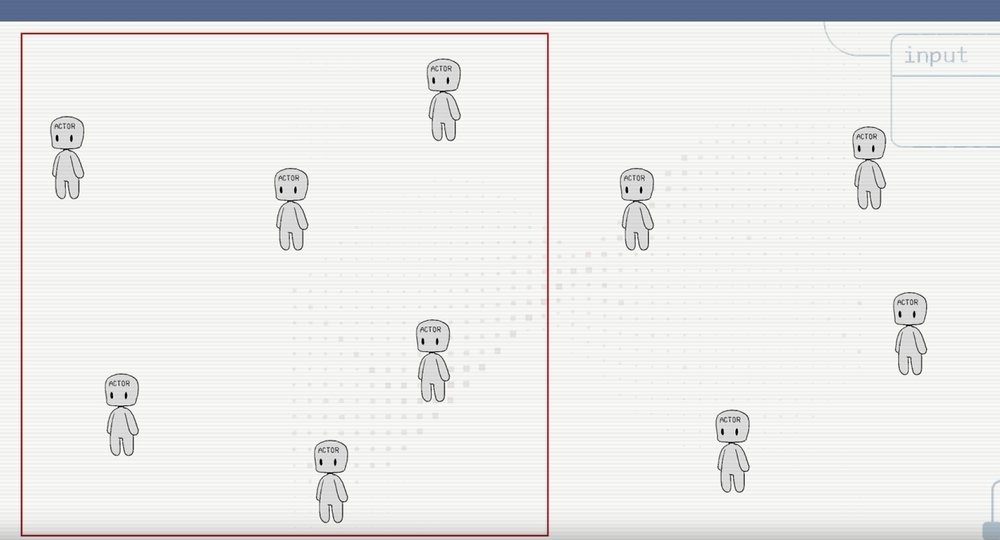
-
액터의 계층 구조를 보장 계층구조를 가지게 만들어놓은 액터들은 계층의 순서대로 등록이 된다.
(Transform정보부터 부모의 종속이 있기 때문)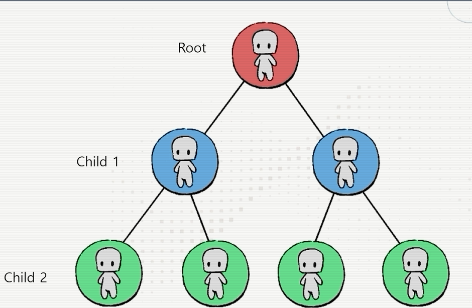
그런데 레벨에 액터가 저장될 때 아래처럼 이쁘게 저장되지는 않는다.
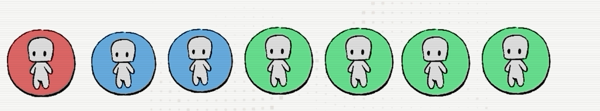
이런 느낌에 가깝다
이럼 루트를 가장 마지막에 등록하면 순회시간이 오래 걸릴 것이다.
따라서 그 전에 정렬 과정을 거친다.
-
액터들의 컴포넌트들도 나눠서 처리한다. 액터의 정렬이 끝나면 액터들의 컴포넌트 등록이 시작된다.
위에서 적었듯 초기 월드가 아니라면 프레임단위로 나누어서 처리한다.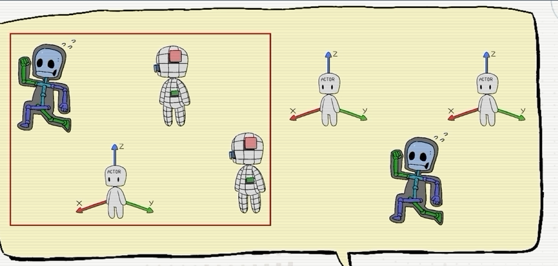
-
컴포넌트의 계층구조도 보장을 해야한다. 컴포넌트 역시 계층구조가 있다.
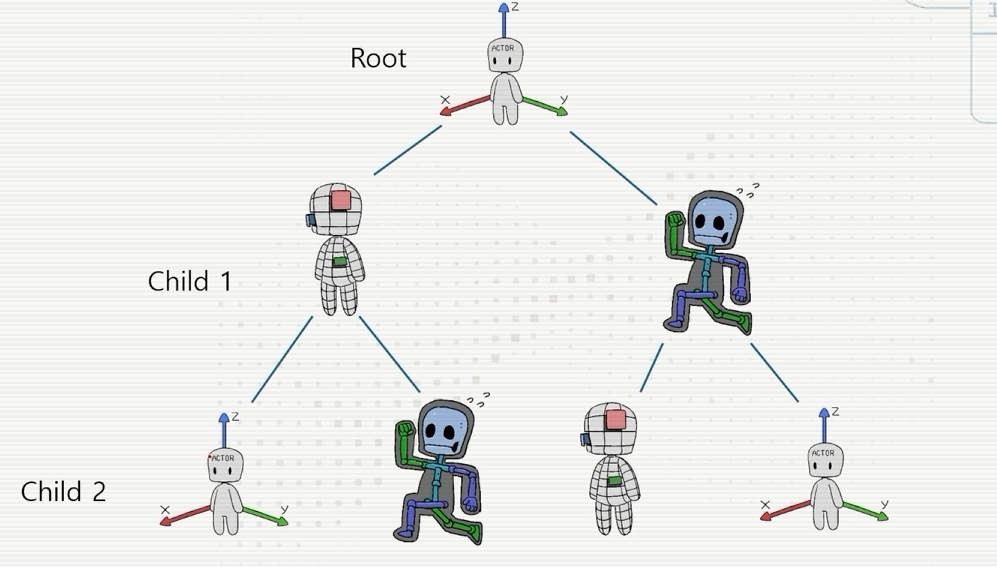
등록을 요청받은 Component는 아래의 구조를 거친다
-
계층구조를 타고 부모 Component가 있는지 확인한다.
a.1. 있으면 등록되었는지 확인한다 ⇒ b
a.2. 없으면 등록한다. -
부모가 등록되어있는지 확인한다.
b.1. 등록되어 있으면 등록한다.
b.2. 계층 구조를 타고 부모 Component가 있는지 확인한다. ⇒ a
-
계층구조를 타고 부모 Component가 있는지 확인한다.
하지만 충격적인 사실은 초기 엔진 로드하면서 월드를 생성 할 때는 이 방법같은거 안쓰고 그냥 한프레임에 전부 처리한다.
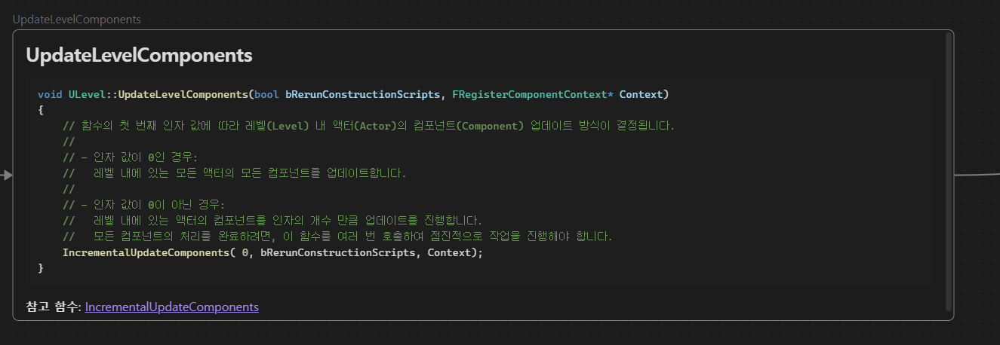
IncrementalUpdateComponents 함수에 0을 넣으면 레벨에 있는 모든 Actor/Component들을 한 프레임에 업데이트 하겠다는 것이다.
만약 3넣으면 한 액터의 3개의 컴포넌트만 등록하고 넘어간다.
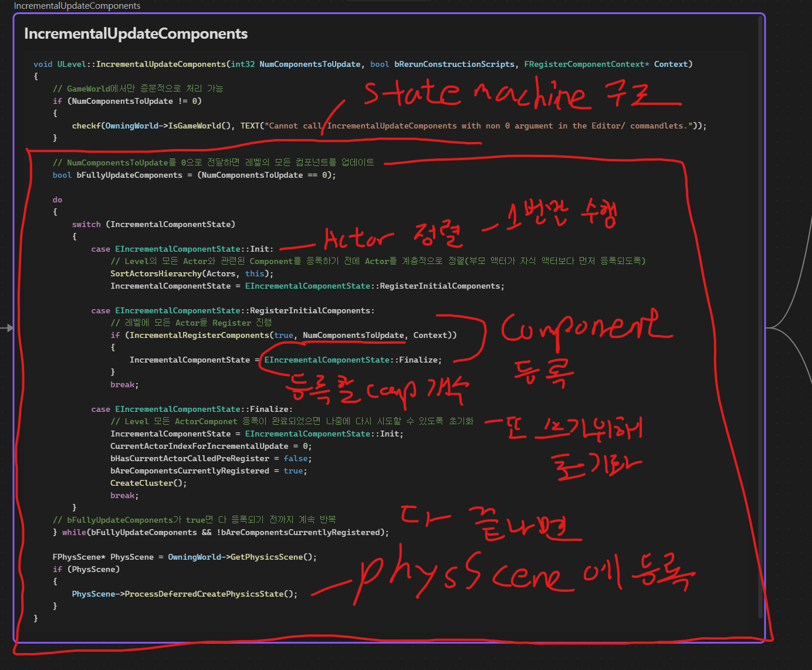
공부하면서 궁금했던점
-
NumComponentsToUpdate를 여러 번 호출하면 매번 액터를 정렬하나? -
컴포넌트 등록이 남아 있으면
Finalize에 못 가는데 문제 아닌가? -
등록 중에 액터 배열이 바뀌면 어떡하나?
Level.IncrementalUpdateComponents.SortActorsHierarchy
코드
static void SortActorsHierarchy(TArray<TObjectPtr<AActor>>& Actors, ULevel* Level)
{
TMap<AActor*, int32> DepthMap;
DepthMap.Reserve(Actors.Num());
TArray<AActor*, TInlineAllocator<10>> VisitedActors;
bool bFoundWorldSettings = false;
// Depth를 계산하기 위한 Lambda
TFunction<int32(AActor*)> CalcAttachDepth = [&DepthMap, &VisitedActors, &CalcAttachDepth, &bFoundWorldSettings](AActor* Actor)
{
int32 Depth = 0;
// 이미 Depth를 계산한 경우 중복 계산 방지
if (int32* FoundDepth = DepthMap.Find(Actor))
{
Depth = *FoundDepth;
}
else
{
// WorldSetting은 UWorld를 생성할 때 처음 추가되는 액터라서 0번에 저장
if (Actor->IsA<AWorldSettings>())
{
if (!bFoundWorldSettings)
{
Depth = TNumericLimits<int32>::Lowest();
bFoundWorldSettings = true;
}
}
// Actor가 다른 Actor에게 부착된 경우
else if (AActor* ParentActor = Actor->GetAttachParentActor())
{
// 이미 검사를 수행한 Actor인지 판별(재귀적 호출이라 없으면 재귀 탈출 못할 가능성 있음)
if (VisitedActors.Contains(ParentActor))
{
// 이미 방문한 Actor면 Log
}
else
{
VisitedActors.Add(Actor);
// ChildActor인 경우
// ChildActor에 부착된 액터들은 AttachChildren 리스트가 아직 완전히 채워지기 전에 등록되면, 부착 정보가 제대로 기록되지 않아 분리될 위험이
// 있으므로 반드시 먼저 등록되어야 해서 ChildActor의 자식 액터의 깊이를 일반적인 경우보다 낮게 설정하여, 등록 순서에서 먼저 처리되도록 보장
// ┌──────────────────────────┐
// │ Owner Actor │◄─────────────────────────────── Depth = 0 (최상위)
// │ (IsChildActor=false) │
// │ ┌──────────────────────┐ │
// │ │ RootComponent │ │
// │ ├──────────────────────┤ │
// │ │ ChildActorComp │─┼─(Spawns Child Actor)──────────┐
// │ │(UChildActorComponent)│ │ │
// │ └──────────────────────┘ │ │
// └──────────────────────────┘ │ Spawn & Attach (handled internally)
// │
// ┌──────────────────────────┐ │
// │ Attached ChildActor │◄──────────────────────────────┴─ Depth = CalcAttachDepth(Owner Actor) + 1 = 1
// │ (IsChildActor=true) │
// │ ┌──────────────────────┐ │
// │ │ RootComponent │─┼───┐
// │ └──────────────────────┘ │ │(Attach Point for Attached Actor)
// └──────────────────────────┘ │
// │
// ┌──────────────────────────┐ │
// │ Attached Actor │◄──┴─────────────── Depth = CalcAttachDepth(Spawned ChildActor) - 1 = 0 <== 특별 규칙!
// │ (IsChildActor=false) │
// │ ┌──────────────────────┐ │
// │ │ RootComponent │ │
// │ └──────────────────────┘ │
// └──────────────────────────┘
if (ParentActor->IsChildActor())
{
Depth = CalcAttachDepth(ParentActor) - 1;
}
// 일반적인 경우
// ┌─────────────────────┐
// │ Actor A │◄────────────────────────── Depth = 0 (최상위)
// │(IsChildActor=false) │
// │ ┌─────────────────┐ │
// │ │ RootComponent │─│───┐ (Attach Point for Actor B)
// │ └─────────────────┘ │ │
// └─────────────────────┘ │
// │
// ┌─────────────────────┐ │
// │ Actor B │◄──┴─────────────── Depth = CalcAttachDepth(Actor A) + 1 = 1
// │(IsChildActor=false) │ (ParentActor = Actor A, IsChildActor()=false)
// │ ┌─────────────────┐ │
// │ │ RootComponent │─┼───┐(Attach Point for Actor C)
// │ └─────────────────┘ │ │
// └─────────────────────┘ │
// │
// ┌─────────────────────┐ │
// │ Actor C │◄──┴─────────────── Depth = CalcAttachDepth(Actor B) + 1 = 2
// │(IsChildActor=false) │ (ParentActor = Actor B, IsChildActor()=false)
// │ ┌─────────────────┐ │
// │ │ RootComponent │ │
// │ └─────────────────┘ │
// └─────────────────────┘
else
{
Depth = CalcAttachDepth(ParentActor) + 1;
}
}
}
DepthMap.Add(Actor, Depth);
}
return Depth;
}
// 모든 Actor를 순회하면서 Depth 계산
for (AActor* Actor : Actors)
{
if (Actor)
{
CalcAttachDepth(Actor);
VisitedActors.Reset();
}
}
// Depth를 이용한 오름차순 정렬용 Lambda
auto DepthSorter = [&DepthMap](AActor* A, AActor* B)
{
const int32 DepthA = A ? DepthMap.FindRef(A) : MAX_int32;
const int32 DepthB = B ? DepthMap.FindRef(B) : MAX_int32;
return DepthA < DepthB;
};
// MergeSort를 이용하여 정렬
StableSortInternal(Actors.GetData(), Actors.Num(), DepthSorter);
// Actor가 null인 경우도 일단 정렬은 진행해서 제거하기 위한 로직(null은 맨뒤에 몰려있음)
int32 RemoveAtIndex = Actors.Num();
while (RemoveAtIndex > 0 && Actors[RemoveAtIndex - 1] == nullptr)
{
--RemoveAtIndex;
}
if (RemoveAtIndex < Actors.Num())
{
Actors.RemoveAt(RemoveAtIndex, Actors.Num() - RemoveAtIndex);
}
}
참고 함수: ActorClass , GetAttachParentActor
위에서 언급했던 Actor들을 정렬시키는 함수이다.
좌표값을 가지게 된다. (USceneComponent)
UChildActorComponent는 SceneComponent 상속으로 다른 Actor 자체를 부착하는 특수한 컴포넌트이다. 스폰한 액터를 USceneComponent에 부착하는것과는 다르게, 월드에서 스폰 전부터 액터가 부착되어있어 뷰포트에서 확인이 가능하다. 부모 액터와 생명주기를 공유한다. (UChildActorComponent)
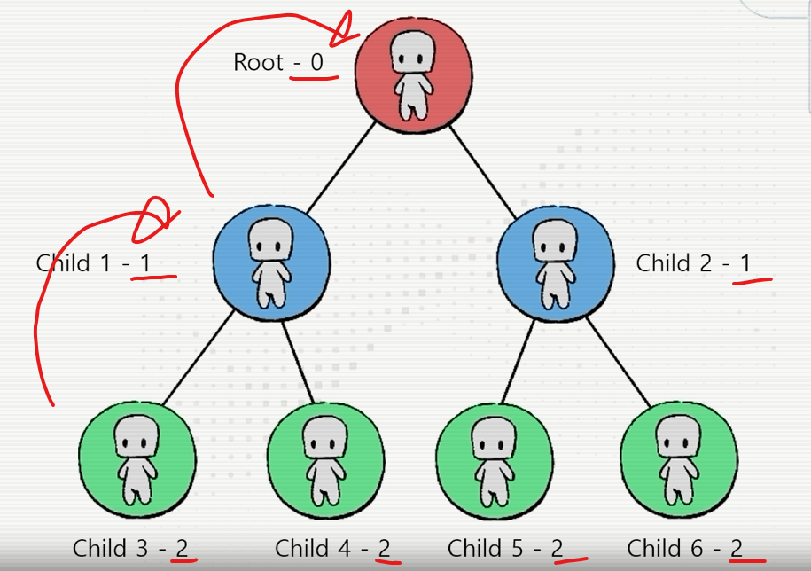
함수내부의 CalcAttachDepth 람다 함수를 재귀적으로 돈다.CalcAttachDepth 에서는 그림처럼 ParentActor 포인터를 확인하면서 자기 자신에 Depth값을 매긴다.
하지만 예외의 경우가 있다.
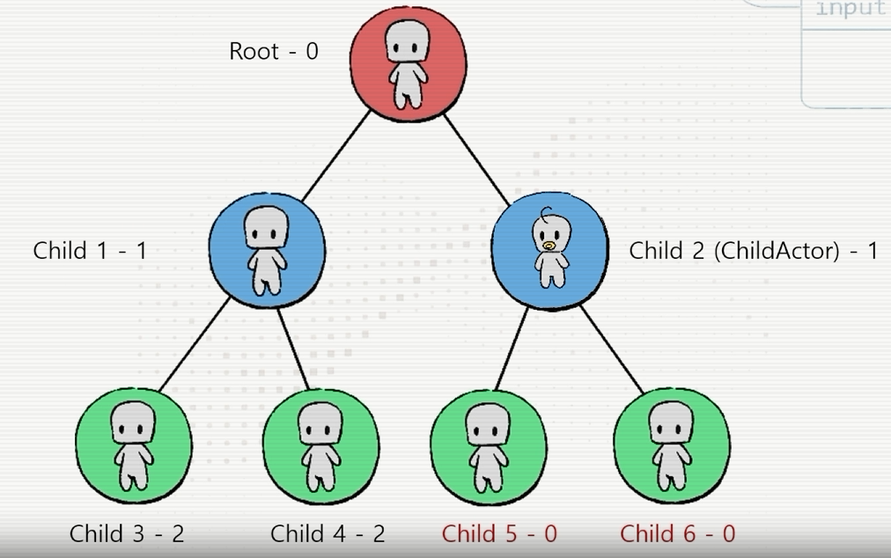
이는 자식 액터가, ChildComponent로 붙인 액터일때 발생한다.
이런 경우에 ChildComponent에 SceneComponent로 붙인 ChildActor는 부모 Depth의 -1 값을 가진다.
이는 ChildComponent의 Actor을 완전히 초기화 된 상태에서 초기화를 진행하기 위함이라고 한다.
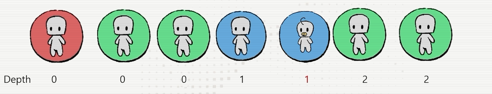
왜 ChildActorComp는 그 자식보다 늦게 되는가… 어려워잉
요약
- 정상적인 최초 게임 등록에서 Child2 재생성이 없다면 특수 정렬은 사실 필요 없음
최초 등록 도중 Child2 재생성이 가능한 에디터/불일치 경로를 방어하려고 특수 정렬
재생성 하는 경우 :
-
ChildActor 클래스가 바뀐 경우: 기존
Child2클래스와ChildActorClass가 달라서 재생성 -
원본 BP의 ChildActorTemplate 프로퍼티가 바뀐 경우: 클래스가 같아도 새 템플릿 상태를 반영하기 위해 재생성 ⇒ 사실상 이게 ActorSort단계에서 Depth를 예외적으로 처리하는 이유에 대한 합당한 이유로 보인다.
- 즉 ChildActorClass는 그대로인데 일부 프로퍼티만 바꿔서 재등록 해야하는 경우가 있을 것이다.
문제의 전조
1. 에디터에서 패키지 로드 - Child2, Child5 UObject는 존재 - Child5.AttachParent = Child2.Root - Child2.Root.AttachChildren = [] // Transient라 비어 있음 2. ChildActorComponent::PostLoad() - 템플릿 변경 가능성 때문에 bNeedsRecreate = true - 아직 연결 정보를 캐시하지는 않음 3. Actor Sort 및 최초 등록 시작 4. ChildActorComponent::OnRegister()(Child2의 부모 액터의 컴포넌트) - bNeedsRecreate 확인 - 여기서 처음 DestroyChildActor() 실행 - 바로 이 순간 AttachChildren을 읽어 캐시 생성 시도정상 순서는:
1. Child5 등록 2. Child5가 저장된 AttachParent인 OldChild2.Root를 찾음 3. OldChild2.Root.AttachChildren.Add(Child5.Root) 4. ChildActorComponent가 OldChild2.Root.AttachChildren을 캐시 5. OldChild2 파괴 6. NewChild2 생성 7. 캐시된 Child5를 NewChild2.Root에 재부착반대로 ChildActorComponent가 먼저 등록되면:
1. OldChild2.Root.AttachChildren이 아직 비어 있음 UPROPERTY(ReplicatedUsing = OnRep_AttachChildren, Transient) TArray<TObjectPtr<USceneComponent>> AttachChildren; Transient이기 때문에 레벨 재로드시 비어있다!! 2. 빈 목록을 캐시 3. OldChild2 파괴 4. NewChild2 생성 5. Child5가 나중에 등록됨 6. Child5가 알고 있던 부모는 파괴된 OldChild2.Root 7. NewChild2.Root는 완전히 다른 객체이므로 자동으로 찾을 수 없음
컴포넌트 등록을 위해 Actor를 정렬할 때, 부모 Actor가 ChildActor인 경우 자식 Actor의 Depth를 낮게 계산한다.
UChildActorComponent는 등록 과정의 특정 상황에서 자신이 관리하는 기존 ChildActor를 파괴하고 재생성할 수 있다.
재생성 후에도 외부 부착 Actor를 유지하려면, 파괴 전에 기존 ChildActor의 RootComponent.AttachChildren을 순회하여 외부 자식의 포인터·소켓·상대 Transform을 캐시해야 한다.
하지만 AttachChildren은 Transient이므로 패키지 로드 직후에는 비어 있다. 원본 부착 정보는 자식 쪽 AttachParent에만 저장되어 있다.
따라서 외부 자식 Actor가 먼저 등록되면서 자신의 AttachParent를 확인하고, 기존 ChildActor Root의 AttachChildren에 자신을 추가해야 한다.
그 후 ChildActor가 재생성되면 UChildActorComponent가 완성된 AttachChildren에서 외부 자식을 캐시하고, 새 ChildActor에 다시 부착할 수 있다.
- 저장된 인스턴스가 현재 템플릿과 달라졌을 가능성이 있는 경우:
PostLoad()에서 보수적으로bNeedsRecreate설정
실제 자동 경로: 에디터 PostLoad
패키지에서 UChildActorComponent가 로드될 때 다음 조건이면:
if (ChildActor && ChildActorTemplate && GetLinker())
{
bNeedsRecreate = true;
}
이후 최초 컴포넌트 등록에서:
PostLoad
→ bNeedsRecreate = true
→ IncrementalUpdateComponents
→ SortActorsHierarchy
→ Root의 컴포넌트 등록
→ ChildActorComponent::OnRegister
→ DestroyChildActor()
→ CreateChildActor()
가 실제로 발생합니다.
OnRegister() 코드에서도 명시적으로 파괴 후 재생성합니다.
if (bNeedsRecreate)
{
bNeedsRecreate = false;
DestroyChildActor();
CreateChildActor();
}
클래스 불일치 경로
저장된 Child2의 실제 클래스와 ChildActorClass가 다르면 최초 등록 중 재생성합니다.
if (ChildActor->GetClass() != ChildActorClass)
{
bNeedsRecreate = true;
}
이는 에디터가 아니어도 가능한 경로입니다. 에셋 변경, 잘못된 직렬화 상태, 리인스턴싱 등의 결과로 발생할 수 있습니다.
프로그래머가 발생시키는 경로
등록 콜백 중 이미 등록된 ChildActorComponent에 다음을 호출하면 즉시 파괴·재생성합니다.
ChildActorComponent->SetChildActorClass(NewClass);
내부 동작은:
if (IsRegistered())
{
DestroyChildActor();
CreateChildActor();
}
- 최초 등록이 끝난 뒤 런타임 재등록에서는 이미
AttachChildren이 완성됐으므로 최초 정렬 순서와 무관
쭉쭉 읽자.. 읽기 힘들것임
Child5가 먼저 등록될 때도 Child2와 Child2.Root UObject는 이미 생성되어 있습니다. 아직 World에 등록되지 않았을 뿐입니다.
| 구분 | 일반 Actor 부모 | ChildActor 부모 |
|---|---|---|
| 자식 등록 시 부모 객체 | 이미 존재 | 이미 존재 |
| 원하는 순서 | 부모 등록 → 자식 등록 | 외부 자식 등록 → ChildActor 등록 |
| 일반적인 이유 | 자식이 부모의 완성된 Transform·Socket·Tick·Physics 상태를 안전하게 사용 | 재구성 전에 부모의 AttachChildren을 완성해야 함 |
| 자식을 먼저 등록하면 | 부모의 World 상태가 아직 완성되지 않아 자식 OnRegister()가 부모 상태를 전제하면 위험 |
기본 USceneComponent 부착은 미등록 부모도 지원하므로 역방향 목록을 먼저 채울 수 있음 |
| 부모를 먼저 등록하면 | 정상 | ChildActor 재생성 시 외부 자식이 캐시에서 누락될 수 있음 |
일반 흐름은 다음입니다.
Parent.Root 등록
→ Parent의 Transform/Socket/Physics 상태 준비
→ Child.Root 등록
→ 준비된 Parent 상태를 사용해 부착
반면 ChildActor 특례는:
Child2와 Child2.Root는 이미 존재하지만 미등록
→ Child5.Root가 AttachParent로 Child2.Root를 이미 알고 있음
→ Child5.Root.OnPreRegister()
→ Child2.Root.AttachChildren에 Child5.Root 추가
→ Child2 등록 또는 재구성
→ 캐시가 AttachChildren에서 Child5를 발견
미등록 부모에 붙을 수 있는 이유는 USceneComponent::OnPreRegister()의 부착이 아직 렌더링·피직스 상태를 만드는 작업이 아니라, 주로 부모의 AttachChildren에 자신을 넣는 논리적 관계 복원이기 때문입니다.
Parent->AttachChildren.Add(this);
따라서 핵심 차이는 다음입니다.
일반 부모는 먼저 등록하여 완성된 부모 상태를 자식에게 제공하는 것이 안전하고, ChildActor 부모는 객체 자체는 이미 존재하므로 자식이 먼저 논리적 부착 관계를 복원할 수 있으며, 오히려 재생성 가능한 부모이기 때문에 자식을 먼저 기록해야 부착 관계를 보존할 수 있습니다.
단, 커스텀 컴포넌트의 OnRegister()에서 “AttachParent는 반드시 이미 등록되어 있다”고 가정하면 ChildActor 특례에서 문제가 될 수 있습니다. 엔진 기본 부착 로직은 그 가정을 하지 않습니다.
두 경우를 구분해야 합니다.
Child2(ChildActor)의OnRegister()가 자신의 부모인Root/ChildActorComponent가 등록됐다고 전제하는 경우: 괜찮습니다.Root(Depth 0)가Child2(Depth 1)보다 먼저 처리됩니다.Child5의OnRegister()가 부모인Child2가 이미 등록됐다고 전제하는 경우: 맞습니다. 망가질 수 있습니다.Child5(Depth 0)가Child2(Depth 1)보다 먼저 등록되기 때문입니다.
엔진 기본 USceneComponent는 미등록 부모에 대한 논리적 부착을 지원하지만, 커스텀 OnRegister() 코드가 다음처럼 가정하면 안전하지 않습니다.
check(GetAttachParent()->IsRegistered());
즉, ChildActor에 붙을 수 있는 Actor의 컴포넌트는 OnRegister()에서 외부 AttachParent가 이미 등록됐다고 가정하면 안 됩니다.
ChildActor 특례는:
부모가 먼저 등록되어 상태가 준비되는 안전성
보다
ChildActor 재생성 시 외부 자식의 부착 관계가 유실되지 않는 안전성
을 우선한 선택입니다.
다만 “기존 보장을 포기했다”기보다는, 부모 선등록은 편의상 제공되는 일반 원칙이지 모든 OnRegister()에서 의존할 수 있는 절대 계약은 아닙니다. 엔진 기본 USceneComponent는 미등록 부모에 붙는 것을 지원합니다.
따라서 정확히는:
ChildActor 경계에서는 부모 선등록의 편의성을 포기하고 부착 관계 보존을 우선하며, 커스텀 컴포넌트는 외부 AttachParent가 이미 등록됐다고 가정하면 안 됩니다.
“부착된 액터가 불완전한
AttachChildren상태로 등록되어서” 문제가 아니라, 부착된 액터가 아직 등록되지 않아AttachChildren을 복원하기 전에 ChildActor가 재구성되는 것이 문제입니다.
부착된 액터의 등록은 문제의 원인이 아니라, AttachChildren을 완성하는 작업입니다.
2. 책임과 경계
부착 관계는 양방향으로 관리됩니다.
Child 5.Root.AttachParent
→ Child 2.Root
Child 2.Root.AttachChildren
→ [Child 5.Root]
하지만 두 정보의 저장 방식이 다릅니다.
UPROPERTY(ReplicatedUsing = OnRep_AttachParent)
TObjectPtr<USceneComponent> AttachParent;
UPROPERTY(ReplicatedUsing = OnRep_AttachChildren, Transient)
TArray<TObjectPtr<USceneComponent>> AttachChildren;
[SceneComponent.h (line 108)](F:/UE_5.7.4/Engine/Source/Runtime/Engine/Classes/Components/SceneComponent.h:108)
핵심은 AttachChildren이 Transient라는 점입니다.
AttachParent: 자식이 부모를 가리키는 원본 관계AttachChildren: 부모가 자식을 빠르게 찾기 위한 런타임 역방향 목록AttachChildren은 저장된 값을 그대로 불러오는 것이 아니라 등록 과정에서 다시 채워져야 함
따라서 레벨 로드 직후에는 다음 상태가 가능합니다.
Child5.Root.AttachParent == Child2.Root // 존재
Child2.Root.AttachChildren == [] // 아직 복원 전
3. 호출 흐름
정상적인 복원 순서
Child 5의 RootComponent가 등록될 때:
Child5.Root.OnPreRegister()
└─ AttachToParent()
└─ AttachToComponent(Child2.Root)
└─ Child2.Root.AttachChildren.Add(Child5.Root)
관련 코드:
- [SceneComponent.cpp (line 817)](F:/UE_5.7.4/Engine/Source/Runtime/Engine/Private/Components/SceneComponent.cpp:817)
- [SceneComponent.cpp (line 837)](F:/UE_5.7.4/Engine/Source/Runtime/Engine/Private/Components/SceneComponent.cpp:837)
- [SceneComponent.cpp (line 2487)](F:/UE_5.7.4/Engine/Source/Runtime/Engine/Private/Components/SceneComponent.cpp:2487)
즉, Child 5가 등록돼야 부모 쪽 역방향 목록이 다음처럼 완성됩니다.
Child2.Root.AttachChildren = [Child5.Root]
잘못된 순서
ChildActor 쪽이 먼저 처리되면 다음 순서가 될 수 있습니다.
1. 레벨 로드
Child5.AttachParent = Child2.Root
Child2.Root.AttachChildren = []
2. Child2가 먼저 재구성됨
3. 엔진이 Child2에 붙은 외부 Actor를 캐시하려고
Child2.Root.AttachChildren을 순회함
4. AttachChildren이 비어 있으므로 Child5를 발견하지 못함
5. 기존 Child2 또는 기존 RootComponent가 파괴됨
6. 새 Child2가 만들어짐
7. 캐시에 Child5 정보가 없으므로 새 Child2에 재부착하지 못함
결과적으로 Child 5는 이전 ChildActor의 사라진 컴포넌트를 부모로 가리키거나, 정리 과정에서 부모 없는 상태가 되어 분리됩니다.AttachChildren이 채워지기 전에 부착 정보가 ComponentInstanceDataCache에서 사라져 detach되는 것을 막기 위한 예외다.
ChildActorComponent는 수정·재구성 시 CA를 없애고 새로 만든다.
CA가 재생성돼도, 에디터에서 만들어 둔 “X가 CA에 붙어 있는 관계”를 유지하는 것이다.
ChildActor에 부착된 액터들은 AttachChildren 리스트가 아직 완전히 채워지기 전에 등록되면, 부착 정보가 제대로 기록되지 않아 분리될 위험이
있으므로 반드시 먼저 등록되어야 해서 ChildActor의 자식 액터의 깊이를 일반적인 경우보다 낮게 설정하여, 등록 순서에서 먼저 처리되도록 보장
이후 오름차순으로 액터를 정렬하고, null인 Actor을 제거한다.
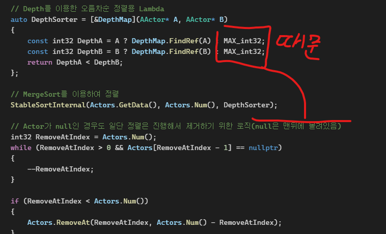
몰려있는 null들을 모아서 한번에 제거한다.
Level.IncrementalUpdateComponents.IncrementalRegisterComponents
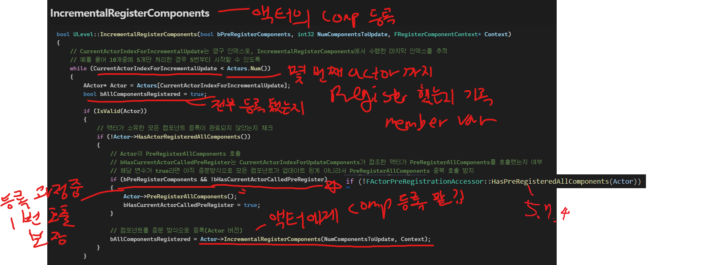
5.6이전버전 코드같다. 참고만하고 아래 사진을더 자세히 보자
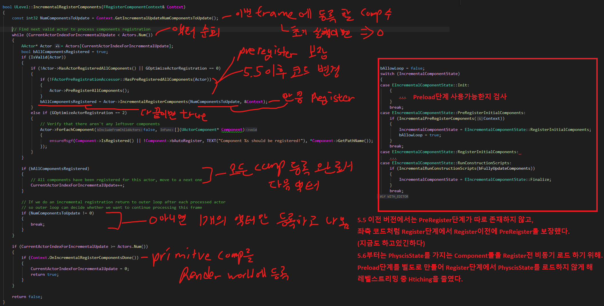
PhyscisState를 사용하는 Component의 OnRegister단계에서
IncrementalComponentState관련해서 5.6버전이후 수정사항
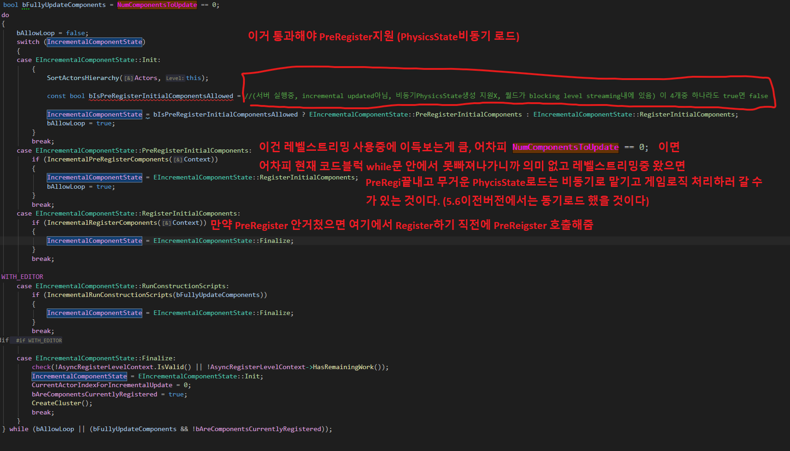
정리 : 조건 맞으면 PhysicState를 비동기 로드하고 조건 안되면 Register단계에서 CreatePhysicsState함수에서 로드됨
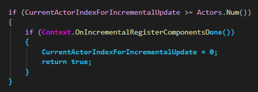
모든 액터의 컴포넌트가 등록이 완료되었을때 여기로 오는데
여기서 PrimitiveComponent들을 RenderScene에 등록한다.
여기서 모아서 처리하는 이유는 하나 완료될 때 마다 진행하면 병목현상이 발생함 효율적인 등록을 위해서 함수 내부적으로 병렬로 등록함
따라서 Component는 등록될때 PhysicsState, RenderState가 같이 등록된다.
아니 그러면 Register단계에서도 PhysicsState 비동기 로딩하면안돼요?
이제 정확히 이해했습니다. 제안하신 흐름은 이거죠.
PreRegister
└─ AsyncPhysics 시작
Register
├─ AsyncPhysics는 백그라운드에서 계속 실행
├─ OnRegister 실행
└─ AsyncPhysics가 끝날 때까지 Register 완료만 보류
결론은:
엔진 구조를 바꾸면 구현은 가능합니다. 하지만
OnRegister()이후에 동기CreatePhysicsState()를 호출한다는 사실은OnRegister()와 PhysicsState 생성을 동시에 실행해도 안전하다는 근거가 아닙니다.
동기 경로와 제안한 경로의 차이
현재 동기 경로는:
OnRegister 시작
OnRegister 완료
PhysicsState 생성 시작
PhysicsState 생성 완료
입니다.
시간 관계로 쓰면:
OnRegister.End < CreatePhysicsState.Start
반면 제안한 경로는:
AsyncPhysics 시작
OnRegister 시작
OnRegister 완료
AsyncPhysics 완료
이므로:
AsyncPhysics.Start < OnRegister < AsyncPhysics.End
가 됩니다.
즉 현재 코드는 순차 실행이고, 제안은 동시 실행입니다.
OnRegister();
CreatePhysicsState();
라는 순서는 “OnRegister가 PhysicsState 없이 호출될 수 있다”는 뜻이지, “PhysicsState를 다른 스레드에서 만드는 동안 OnRegister를 호출해도 된다”는 뜻은 아닙니다.
실제 OnRegister()가 Physics 입력을 건드림
UStaticMeshComponent::OnRegister()를 보면:
NotifyIfStaticMeshChanged();
if (!IsPreRegistered())
{
UpdateCollisionFromStaticMesh();
}
가 있습니다. [StaticMeshComponent.cpp (line 814)](/F:/UE_5.7.4/Engine/Source/Runtime/Engine/Private/Components/StaticMeshComponent.cpp:814)
UpdateCollisionFromStaticMesh()는 Physics 비동기 작업이 참조하는 다음 데이터에 영향을 줄 수 있습니다.
StaticMeshBodySetupBodyInstance- Collision 설정
그래서 PreRegister 경로에서는 Physics 작업을 시작하기 전에 미리 실행합니다.
bool UStaticMeshComponent::ShouldIncrementalPreRegister(...)
{
UpdateCollisionFromStaticMesh();
return Super::ShouldIncrementalPreRegister(...);
}
그리고 나중의 OnRegister()에서는:
if (!IsPreRegistered())
{
UpdateCollisionFromStaticMesh();
}
조건으로 중복 수정을 피합니다.
즉 설계 의도가 명확합니다.
Collision 입력 확정
→ Async PhysicsState 생성
→ 작업 완료
→ OnRegister
Physics 작업 중간에 OnRegister()가 실행되도록 만든 구조가 아닙니다.
핵심은 같은 데이터를 건드리는 것 자체가 문제가 아니라, 읽기와 쓰기가 동시에 일어나는 게 문제라는 점입니다.
UpdateCollisionFromStaticMesh()를 CreatePhysicsState()보다 먼저 호출하는 현재 동기 경로는 안전합니다.
게임 스레드
──────────────────────────────────
UpdateCollisionFromStaticMesh 시작
UpdateCollisionFromStaticMesh 완료
CreatePhysicsState 시작
CreatePhysicsState 완료
Physics 생성이 시작될 때 Collision 설정 변경은 이미 끝났습니다.
반면 제안하신 경로는:
게임 스레드 백그라운드 스레드
─────────────────────────────────────────────
Physics 생성 시작
OnRegister 시작
Collision 데이터 변경 Collision 데이터 읽기
OnRegister 완료 Physics 생성 계속
이렇게 읽기와 쓰기가 겹칠 수 있습니다.
실제로 어떤 데이터를 변경하나
UpdateCollisionFromStaticMesh()는 다음을 호출합니다.
BodyInstance.UseExternalCollisionProfile(BodySetup);
내부에서는:
ExternalCollisionProfileBodySetup = InBodySetup;
bPendingCollisionProfileSetup = false;
LoadProfileData(false);
를 수행합니다. 즉 FBodyInstance의:
- Collision Profile
- Collision Enabled
- Object Type
- Channel Response
- 외부
BodySetup포인터
등을 갱신합니다.
반면 PhysicsState 생성은 백그라운드에서 같은 FBodyInstance를 읽습니다.
const ECollisionEnabled::Type CollisionType =
Instance->GetCollisionEnabled();
ActorParams.bSimulatePhysics =
Instance->ShouldInstanceSimulatingPhysics();
Instance->BuildBodyFilterData(...);
BodySetup->AddShapesToRigidActor_AssumesLocked(...);
예를 들어 비동기 작업이 다음 값을 읽는 도중:
CollisionEnabled = QueryOnly
ResponseToChannels = 이전 값
게임 스레드가 Profile을 바꾸면 결과가:
Actor 생성 판단은 이전 CollisionEnabled 사용
Shape Filter는 새로운 ResponseToChannels 사용
처럼 서로 다른 시점의 설정을 섞어서 사용할 수 있습니다.
더 근본적으로 C++에서 동기화 없는 동일 메모리의 read/write는 data race라서 결과가 보장되지 않습니다.
현재 동기 경로
현재 Register 경로는:
OnRegister(); // Collision 설정 변경 완료
CreatePhysicsState(true); // 그 후 설정을 읽어서 Body 생성
입니다.
따라서 순서는:
Collision 설정 확정
↓
PhysicsState 생성 시작
입니다.
OnRegister() 다음에 CreatePhysicsState()가 있다는 것은:
OnRegister가 PhysicsState 생성에 사용할 입력을 변경해도 된다.
는 뜻에 가깝습니다.
반대로:
PhysicsState 생성과 OnRegister를 동시에 실행해도 된다.
는 뜻은 아닙니다.
현재 비동기 PreRegister 경로
StaticMeshComponent는 비동기 작업을 시작하기 전에 Collision 설정을 미리 확정합니다.
bool UStaticMeshComponent::ShouldIncrementalPreRegister(...)
{
UpdateCollisionFromStaticMesh();
return Super::ShouldIncrementalPreRegister(...);
}
그다음:
UpdateCollisionFromStaticMesh 완료
↓
Async PhysicsState 시작
↓
Async PhysicsState 완료
↓
OnRegister
순서로 갑니다.
나중에 OnRegister()에서는:
if (!IsPreRegistered())
{
UpdateCollisionFromStaticMesh();
}
이므로 PreRegister를 탄 Component는 Collision 설정을 다시 변경하지 않습니다.
즉 두 경로를 비교하면:
일반 동기 등록:
OnRegister에서 입력 확정 → Physics 생성
비동기 PreRegister:
PreRegister에서 입력 확정 → Physics 생성 완료 → OnRegister
둘 다 Physics 생성 중에는 알려진 Collision 입력을 변경하지 않습니다.
Actor.IncrementalRegisterComponents
컴포넌트의 계층을 어떻게 올바르게 등록하는지
컴포포넌트를 등록하는 함수가 뭔지 집중하자.
액터의 컴포넌트를 월드에 나눠서 등록하는 함수
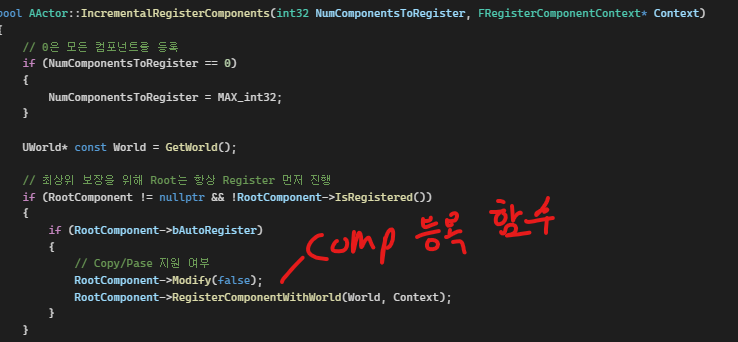
루트컴포넌트는 컴포넌트 등록과정에서 보장되어야하기때문에 가장먼저 등록한다.
컴포넌트 등록 과정 Flow
- 부모 컴포넌트 없을때
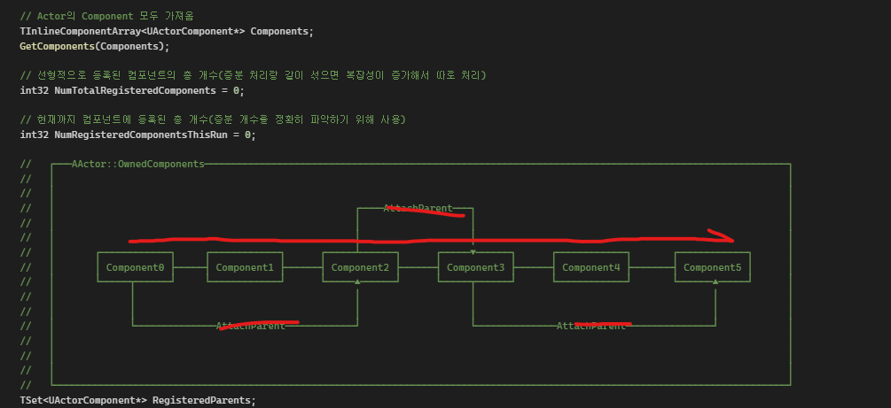
- 부모 컴포넌트 있을때
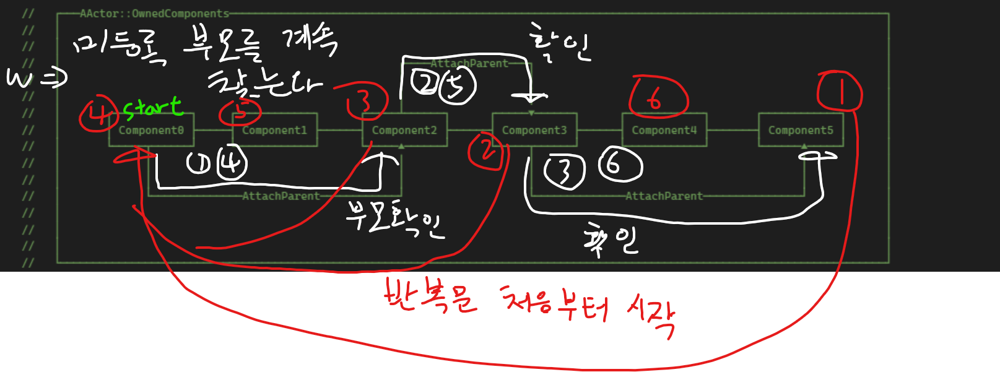
- 컴포넌트를 나눠서 등록하는 경우 그냥 위 순서를 n개씩 수행한다.
Flow 코드
// NumRegisteredComponentsThisRun < NumComponentsToRegister를 통해 증분처리 지원
for (int32 CompIdx = 0; CompIdx < Components.Num() && NumRegisteredComponentsThisRun < NumComponentsToRegister; ++CompIdx)
{
UActorComponent* Component = Components[CompIdx];
if (!Component->IsRegistered() && Component->bAutoRegister && IsValidChecked(Component))
{
// 컴포넌트 계층을 따라 올라가며, 루트에 가장 가까운 미등록 부모 컴포넌트를 반환
USceneComponent* UnregisteredParentComponent = GetUnregisteredParent(Component);
if (UnregisteredParentComponent)
{
bool bParentAlreadyHandled = false;
RegisteredParents.Add(UnregisteredParentComponent, &bParentAlreadyHandled);
// 이미 등록되어 있는 대상이라면 문제가 있음
if (bParentAlreadyHandled)
{
break;
}
Component = UnregisteredParentComponent;
// CompIdx를 --해서 기존 등록 대상 유지
CompIdx--;
// 부모먼저 된 경우 선형적인 구조로 한번에 계산하기 위해 -- 진행
NumTotalRegisteredComponents--;
}
Component->Modify(false);
Component->RegisterComponentWithWorld(World, Context);
// 증분의 정확한 계산을 위해 별도로 루프 계산
// 이번 run에 몇개나 등록할
NumRegisteredComponentsThisRun++;
}
NumTotalRegisteredComponents++;
}
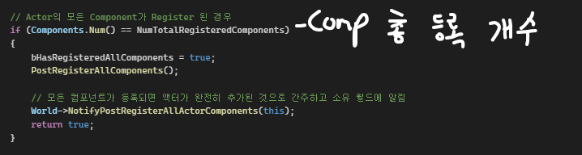
ActorComponent.RegisterComponentWithWorld
함수를 배우기 전 등록이라는 개념을 알고가자
등록은 다음 단계로 이해하면 쉽다
-
부모에 대한 정보를 기준으로 자식을 업데이트한다.
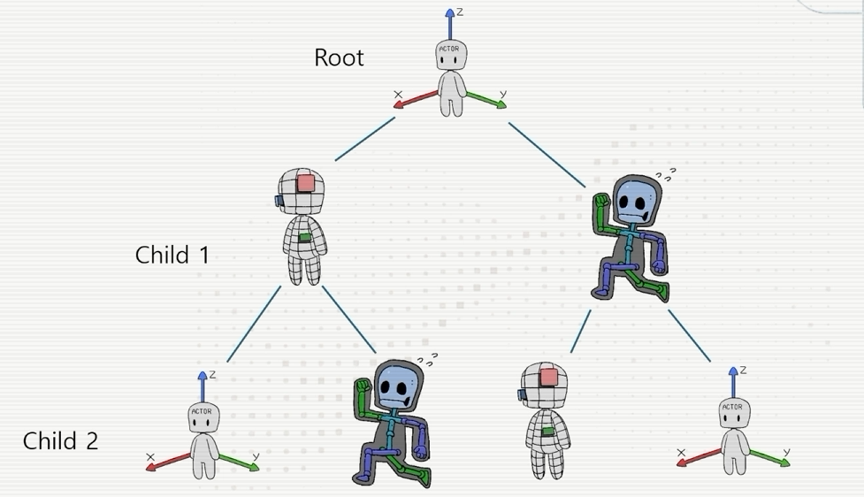
가장 간단한 예는 Transform관계가 있겠다.
-
컴포넌트를 각각의 전문 월드에 등록한다.
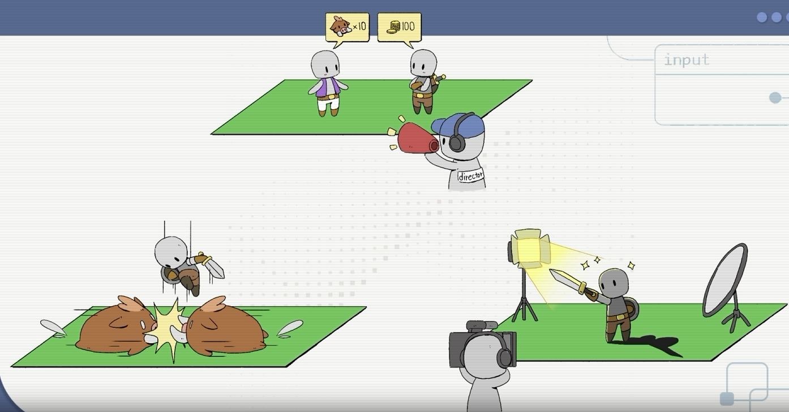
컴포넌트들은 각각 자신의 복사본을 만들수 있고,
이 복본들을 필요로하는 월드에 등록을한다.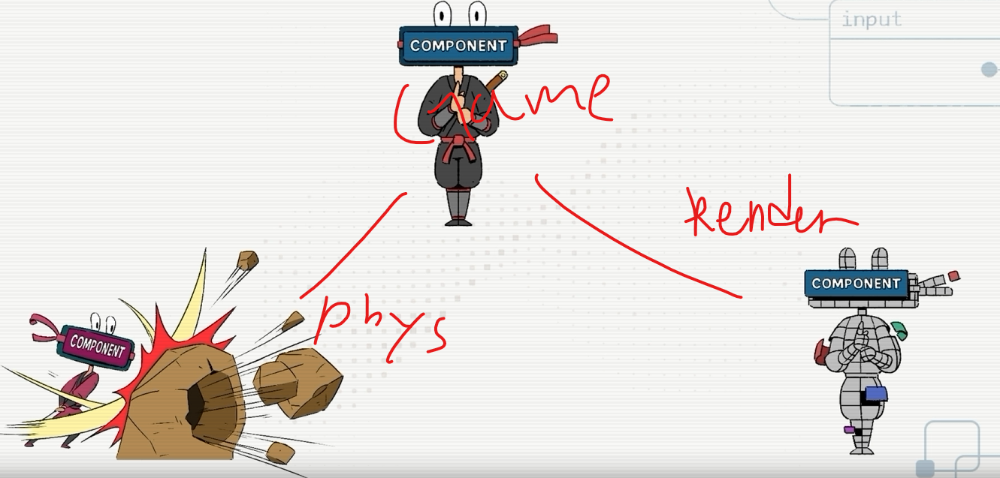
이 액터의 StaticMeshComponent는 어디에 등록될까?
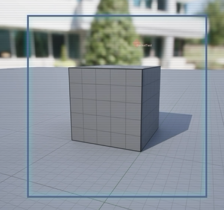
- 일단 게임 월드에 등록된다. 애초에 게임 월드에 등록되지 않으면 좌표정보같은 기본적인 정보도 없기 때문이다.
- 메시에 있는 메시/머티리얼 정보를 사용해 렌더링 씬에 등록을 한다.
- 만약 물리적인 상호 작용이 필요하면? 피직스 씬에 등록된다.
그래서 왜 복사본 만들어요?
당연하다 예를들어 모든 컴포넌트가 Game/Phys/Render World 쏘다니면 비효율적일 것이다.
그래서 필요한거만 딱딱 처리하기 위해 복사본 만드는거다
만약 컴포넌트가 런타임중에 생성되었을때
컴포넌트는 등록 과정에서 FTickTaskLevel에 본인의 틱 함수를 등록한다.
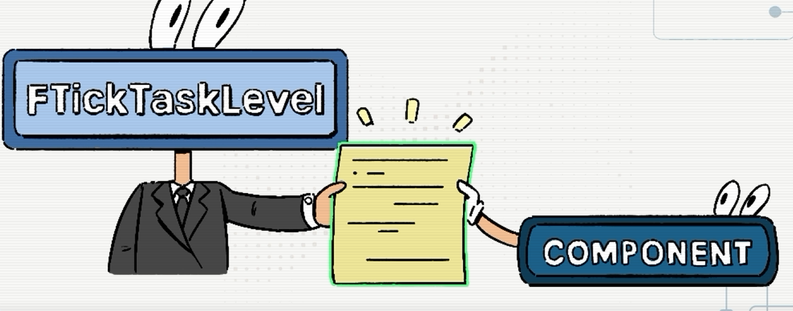
코드분석
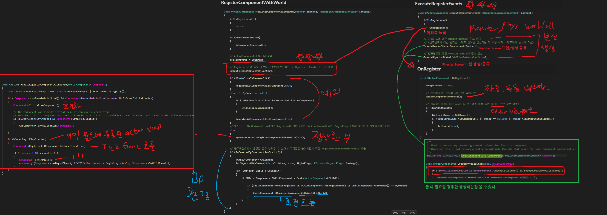